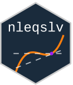

|
 |
| Actions | Code Coverage | Website | CRAN Downloads | CRAN |
|---|---|---|---|---|
Solve a system of nonlinear equations using a Broyden or a Newton method with a choice of global strategies such as line search and trust region. There are options for using a numerical or user supplied Jacobian, for specifying a banded numerical Jacobian and for allowing a singular or ill-conditioned Jacobian.
Original Author: Berend Hasselman
Installation
You can install the released version of nleqslv from CRAN with:
install.packages("nleqslv")You can also install the development version of lhs from github with:
if (!require(devtools)) install.packages("devtools")
devtools::install_github("bertcarnell/nleqslv")Quick Start
Start with a function to find solutions for: High-degree polynomial system from Kearfott (1987).
hdp <- function(x) {
stopifnot(length(x) == 3)
f <- numeric(3)
f[1] <- 5 * x[1]^9 - 6 * x[1]^5 * x[2]^2 + x[1] * x[2]^4 + 2 * x[1] * x[3]
f[2] <- -2 * x[1]^6 * x[2] + 2 * x[1]^2 * x[2]^3 + 2 * x[2] * x[3]
f[3] <- x[1]^2 + x[2]^2 - 0.265625
f
}
sln <- nleqslv(c(0.2, 0.3, 0.7), hdp, control=list(trace=1))## Algorithm parameters
## --------------------
## Method: Broyden Global strategy: double dogleg (initial trust region = -2)
## Maximum stepsize = 1.79769e+308
## Scaling: fixed
## ftol = 1e-08 xtol = 1e-08 btol = 0.001 cndtol = 1e-12
##
## Iteration report
## ----------------
## Iter Jac Lambda Eta Dlt0 Dltn Fnorm Largest |f|
## 0 1.378974e-01 4.221216e-01
## 1 N(1.2e-01) N 0.7206 1.0941 1.0941 7.861105e-02 3.280423e-01
## 2 B(1.6e-01) N 0.8846 0.4073 0.8147 9.816774e-04 3.712402e-02
## 3 B(1.5e-01) N 0.9568 0.0325 0.0649 5.648068e-05 8.954167e-03
## 4 B(1.4e-01) N 0.7584 0.0185 0.0185 3.258227e-05 6.104201e-03
## 5 B(1.6e-01) N 0.8301 0.0082 0.0164 2.478058e-07 5.429045e-04
## 6 B(1.6e-01) N 0.9604 0.0005 0.0005 2.518127e-07 5.875496e-04
## 7 N(4.3e-02) N 0.2754 0.0090 0.0179 3.356158e-09 8.006713e-05
## 8 B(4.5e-02) N 0.9894 0.0001 0.0002 4.425283e-13 6.020421e-07
## 9 B(4.8e-02) N 0.5297 0.0000 0.0000 1.824856e-15 4.427695e-08
## 10 B(4.6e-02) N 0.6679 0.0000 0.0000 1.380907e-19 3.970110e-10
sln$xEvaluate solutions from the same starting location using multiple methods and global strategies.
## Call:
## testnslv(x = c(0.2, 0.3, 0.7), fn = hdp)
##
## Results:
## Method Global termcd Fcnt Jcnt Iter Message Fnorm
## 1 Newton cline 1 5 5 5 Fcrit 1.431e-21
## 2 Newton qline 1 5 5 5 Fcrit 1.431e-21
## 3 Newton gline 1 5 5 5 Fcrit 1.431e-21
## 4 Newton pwldog 1 5 5 5 Fcrit 1.431e-21
## 5 Newton dbldog 1 5 5 5 Fcrit 1.431e-21
## 6 Newton hook 1 5 5 5 Fcrit 1.431e-21
## 7 Newton none 1 5 5 5 Fcrit 1.431e-21
## 8 Broyden cline 1 10 2 10 Fcrit 1.381e-19
## 9 Broyden qline 1 10 2 10 Fcrit 1.381e-19
## 10 Broyden gline 1 10 2 10 Fcrit 1.381e-19
## 11 Broyden pwldog 1 10 2 10 Fcrit 1.381e-19
## 12 Broyden dbldog 1 10 2 10 Fcrit 1.381e-19
## 13 Broyden hook 1 10 2 10 Fcrit 1.381e-19
## 14 Broyden none 1 17 1 17 Fcrit 9.498e-18Search for multiple solutions from a variety of starting locations.
set.seed(1245323)
N <- 40
xstart <- matrix(runif(3*N, min = -1, max = 1), nrow = N, ncol = 3)
ans <- searchZeros(xstart, hdp, method = "Broyden", global = "dbldog")
ans$x## [,1] [,2] [,3]
## [1,] -5.153882e-01 1.156243e-08 -1.244560e-02
## [2,] -4.669800e-01 -2.180704e-01 -2.257786e-09
## [3,] -4.669800e-01 2.180704e-01 -8.809291e-11
## [4,] -2.798547e-01 -4.327890e-01 -1.418919e-02
## [5,] -2.798547e-01 4.327890e-01 -1.418919e-02
## [6,] 3.744009e-08 -5.153882e-01 -6.610876e-11
## [7,] 5.553708e-09 5.153882e-01 -6.161770e-11
## [8,] 2.798547e-01 -4.327891e-01 -1.418919e-02
## [9,] 2.798547e-01 4.327890e-01 -1.418919e-02
## [10,] 4.669800e-01 -2.180703e-01 1.659893e-10
## [11,] 4.669800e-01 2.180703e-01 -4.756912e-10
## [12,] 5.153882e-01 -6.330974e-09 -1.244560e-02